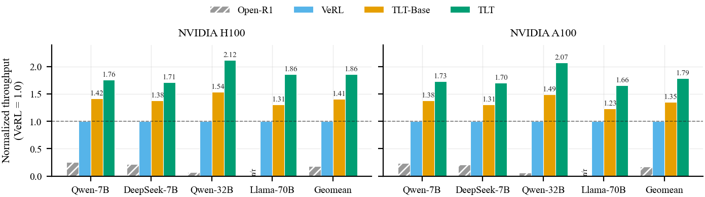
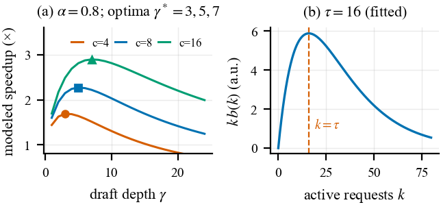

Abstract
Reinforcement-learning (RL) post-training of reasoning large language models is bottlenecked by rollout generation, which takes roughly 85% of step time in published measurements and is governed by a few very long responses. TLT (ASPLOS '26) reports 1.7–2.1× end-to-end speedups over VeRL without changing the RL algorithm, by training a draft model on otherwise-idle GPUs and enabling speculative decoding only in the long tail.
This paper is an independent, code-level audit of how those gains arise. It (i) traces eleven claimed mechanisms to file- and line-level locations in the released code and identifies five points where the implementation refines or departs from the published description, most consequentially that online drafter training ships disabled; (ii) executes a unit test of that online training path, which shows that under the pinned software versions the drafter's training forward pass is not causal and lets samples packed into one sequence attend to each other; (iii) re-verifies every reported quantity against the original publication; (iv) builds an assumption-explicit analytical model whose Amdahl bound shows that the measured end-to-end gains imply a 1.9–2.6× rollout-phase acceleration; and (v) distinguishes TLT's systems-level overlap from the algorithmic asynchrony of off-policy RL. The findings are distilled into deployment guidance.
Key findings
The online drafter-training pass is not causal
Under the pinned transformers 4.57.1, fastrl's drafter combines eager attention with a Boolean fallback mask. Earlier tokens can see later ones, and packed samples see each other. A positive control on the standard model is causal. This cannot affect losslessness; the accuracy impact was not measured.
"Free" drafter training ships switched off
enable_drafter_training and collect_hidden_states_from_sgl both default to false. Reproducing the online-drafter claim requires enabling both.
Five implementation–paper divergences
A five-state worker machine (not three), a 10-check activation hysteresis, uniform buffer sampling instead of long-sequence priority, and a trainable LM head on the EAGLE-3 path, in addition to the default-off training.
The reported numbers are mutually consistent
By Amdahl's law, the 1.66–2.12× end-to-end gains imply a 1.9–2.6× rollout speedup, in line with the measured 2.44× case study and 2.33–3.22× micro-benchmarks.
Read the paper
IEEE conference format, two columns, 11 pages.
Viewer not loading? Open the PDF directly. An earlier 24-page long-form draft is still available; the IEEE version supersedes it.
Check it yourself
Every number and code citation can be re-checked without trusting the write-up. The scripts, instructions, and saved outputs are in the verification folder.
verify_numbers.py
Recomputes every derived quantity: ratios, geometric means, the Pareto order statistic with a seeded Monte Carlo run, the speculative-decoding model, and the Amdahl bound.
verify_code_claims.py
Checks every file:line citation against the fastrl repository at commit bce3df7.
test_drafter_masking.py
Runs fastrl's drafter class the way the online trainer calls it and tests causality and cross-sample attention, with a positive control.
git clone https://github.com/mit-han-lab/fastrl && git -C fastrl checkout bce3df7python verify_numbers.pypython verify_code_claims.py fastrlpython test_drafter_masking.py fastrl # needs torch + transformers==4.57.1Where each claim comes from
Every quantitative or mechanistic statement in the paper belongs to one of four classes, and the class is stated where it appears.
Reported by the TLT authors; cited with figure or table number.
Verified in the released fastrl source; cited by file and line.
Assumption-based closed forms; never presented as measurements.
Arithmetic or reasoning added in this paper from cited inputs.
Figures from the paper
Regenerated from inline, audited data arrays by make_figures_ieee.py.

MeasuredEnd-to-end RL training throughput normalized to VeRL (TLT Fig. 11).

MeasuredSD speedup vs. tokens verified per step for six batch sizes (TLT Table 4).

DerivedAmdahl bound at 85% rollout: a 1.9–2.6× implied rollout speedup against a 6.7× ceiling.

Modeled(a) Interior optimum in draft depth; (b) why SD should switch off at large batch sizes. Assumption-based, not measured.
Links
Original paper
Taming the Long-Tail, ASPLOS '26 (arXiv:2511.16665). All original results are the authors'.
fastrl code
The released implementation (Apache-2.0), audited at commit bce3df7.
Interactive dashboard
The author's companion dashboard; source of the analytical models.
This repository
Paper source, figures, verification scripts, and the response to external review.